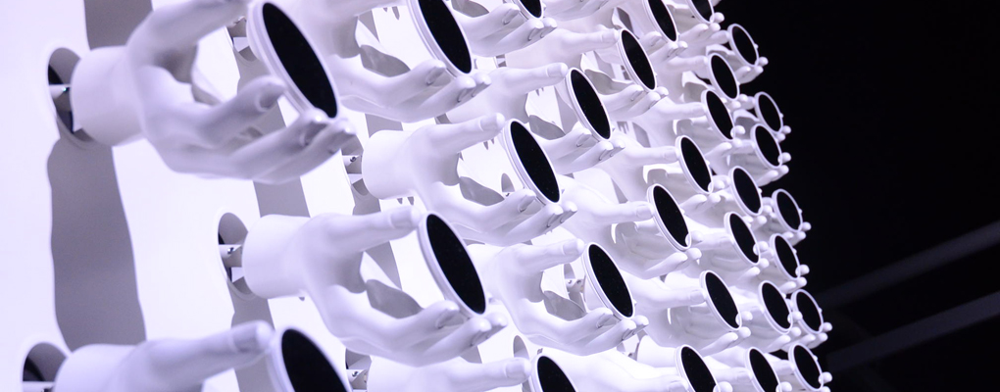

- 


1987年(厳密には1979年)から24年目を迎えた「アルス・エレクトロニカ」。"origin - how it all begins"というテーマを掲げた今年は、"Robotinity"や"Interface Culture"といった企画展、そしてCERNとの共同企画となったLHC(大型ハドロン衝突加速器)や宇宙研究全般に関する展示など、その根底に「origin = 起源」を想い起こさせる作品が多く印象に残りました。テクノロジーとそれに付随するインターフェースが物凄い速度でアンビエント化していくなか、50年後、100年後の未来をどう生きてゆくべきなのか？そんな問いと、それに対するヒントを垣間見た気がしています。
FESTIVAL REPORTページでは、齋藤・今野・谷藤の3人が数多くの中からピックアップした作品を、その魅力や楽しみ方などを交えながらお伝えします。
※文中の人物名は敬称略。